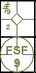
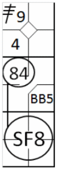
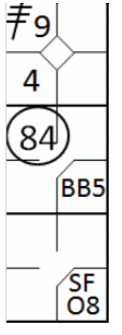

action { batter -> 3BRC }
/* Le frappeur frappe une fly ans dans le champ centre qui est rattrapée de volé par le défenseur, le coureur marque le point */
action { batter -> SF8 , runner3 -> + }

Conformément à la règle 9.08(d) de l'OBR : Inscrire un sacrifice fly, quand avec moins de deux retraits, le batteur frappe un fly en direction d’un joueur de champ extérieur, ou d’un joueur de champ intérieur courant dans le champ extérieur dans le territoire des bonnes ou des mauvaises balles qui :
Commentaire: Le scoreur officiel doit inscrire un sacrifice fly dans le respect de la règle 9.08(d)(2) même si un autre coureur est retiré sur un jeu forcé parce que le batteur devient coureur.
Le règlement stipule que la balle doit être attrapée au champ extérieur. Par conséquent, un sacrifice au champ extérieur est validé même si la balle est attrapée par un joueur de champ intérieur courant au champ extérieur. Ceci s'applique particulièrement à l'arrêt-court qui, de par sa position, évolue souvent en retrait, en bordure de la zone de terre battue, et peut donc, en courant rapidement, atteindre le champ extérieur pour attraper une balle au champ extérieur.
Un sacrifice fly (comme un amorti sacrifice) ne compte pas comme un passage au bâton. L'abréviation pour sacrifice fly est « SF » suivie du numéro du joueur de champ qui a effectué l'élimination.
Exemple 15:
Une balle haute au champ centre devient un sacrifice car elle permet au coureur en troisième base de marquer.
De toute évidence, le coureur en troisième base a attendu que la balle soit attrapée avant de quitter la base, sinon
il aurait été retiré sur appel et le sacrifice annulé.
IMPORTANT: Alors qu'un amorti (bunt) est crédité s'il permet à un coureur d'avancer d'une base, un
sacrifice fly n'est crédité que s'il permet à un coureur d'atteindre le marbre.
| WBSC | Transcription dans l'outil de scorage | Outil |
|---|---|---|
|
|
/* Le premier batteur frappe un triple dans le champ droit */ action { batter -> 3BRC } /* Le frappeur frappe une fly ans dans le champ centre qui est rattrapée de volé par le défenseur, le coureur marque le point */ action { batter -> SF8 , runner3 -> + } |
|
Un sacrifice fly est validé même si le défenseur laisse tomber la balle, à condition que, de l'avis du scoreur, le coureur aurait pu marquer un point même sans cette erreur.
Exemple 16: Sacrifice fly dans le de champ gauche, mais le défenseur laisse échapper la balle. Comme vous pouvez le constater, l'avancement du coureur au marbre est indiqué par le numéro de frappe du joueur ayant frappé le sacrifice. Malgré l'erreur qui permet au coureur d'occuper la première base, son temps de présence au bâton n'est pas comptabilisé.
| WBSC | Transcription dans l'outil de scorage | Outil |
|---|---|---|

|
/* Le premier batteur frappe un double dans le champs gauche */ action { batter -> 2B7 } /* Le coureur en 2 vole la troisième base */ action { runner2 -> SB } /* le batteur frappe une fly dans le champ. Le défenseur commet une erreur en rattrapant la balle, le coureur marque le point */ action { batter -> SFE7 , runner3 -> + } |

|
Exemple 17:
Un sacrifice fly se produit également lorsque la balle est frappée en territoire des fausses balles au champ
extérieur. En effet, une prise par un joueur de champ extérieur en territoire des fausses balles remet les coureurs
en jeu, et ils peuvent tenter d'avancer.
L’abréviation « FSF » est utilisée pour désigner une balle sacrifice en territoire des fausses balles.
| WBSC | Transcription dans l'outil de scorage | Outil |
|---|---|---|

|
/* Le premier batteur frappe un triple dans le champ droit */ action { batter -> 3B9 } /* le deuxième frappeur frappe une fly dans le champ droit dans la zone des fausses balles, et le défenseur rattrape la balle de volé */ action { batter -> FSF9 , runner3 -> + } |
 |
Un sacrifice fly doit être validé s'il permet à un coureur de marquer un point, même si un autre coureur est éliminé sur la base qu'il tentait d'atteindre.
Exemple 18: Après avoir attrapé une balle au vol, le joueur de champ centre aide le défenseur de la deuxième base à temps pour éliminer le coureur arrivant de la première base, tandis que le coureur en troisième base atteint le marbre. On parle alors d'un double jeu.
| WBSC | Transcription dans l'outil de scorage | Outil |
|---|---|---|
|
 |
/* le premier frappeur frappe un triple dans le champ droit */ action { batter -> 3B9 } /* Le deuxième frappeur arrive sur un 'base on ball' */ action { batter -> BB } /*Le frappeur frappe une fly dans le champ centre, le défenseur attrape la balle de volée. Le défenseur renvoie la balle au défenseur de la deuxième base pour retirer le coureur arrivant de la 1. Le coureur en troisième abse en profite pour marquer le point */ action { batter -> SF8 , runner1 -> 84 , runner3 -> + } |

|
Si la défense avait déjà effectué un retrait, le point aurait dû être marqué avant le retrait en deuxième base (troisième retrait), sinon aucun point n'aurait été marqué et il ne s'agirait pas d'un sacrifice fly.
Un sacrifice fly doit également être crédité si la balle est échappée par la défense et qu'un coureur est retiré, pourvu que le coureur en troisième base marque.
Exemple 19: Le joueur de champ centre, après avoir laissé tomber la balle, élimine le coureur en deuxième base, tandis que l'autre coureur marque un point. Dans ce cas, aucune erreur n'est imputée au joueur de champ extérieur, conformément à la règle 9.12(d)(4) du règlement.
| WBSC | Transcription dans l'outil de scorage | Outil |
|---|---|---|
|
 |
/* le premier frappeur frappe un triple dans le champ droit */ action { batter -> 3B9 } /* Le deuxième frappeur arrive sur un 'base on ball' */ action { batter -> BB } /* Le frappeur frappe une fly dans le champ centre, le défenseur attrape la balle de volée mais la laisse retomber. Le défenseur renvoie la balle au défenseur de la deuxième base pour retirer le coureur arrivant de la 1. Le coureur en troisième base en profite pour marquer le point */ action { batter -> SFO8 , runner1 -> 84 , runner3 -> + } |

|